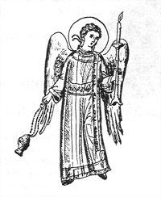

The Holy, Glorious All-laudable Apostle and Evangelist, Virgin, and Beloved Friend of Christ, John the Theologian was the son of Zebedee and Salome, a daughter of St. Joseph the Betrothed. He was called by our Lord Jesus Christ to be one of His Apostles at the same time as his elder brother James. This took place at Lake Gennesareth (i.e. the Sea of Galilee). Leaving behind their father, both brothers followed the Lord.
After his calling, the Apostle John did not part from the Lord, and he was one of the three apostles who were particularly close to Him. St. John the Theologian was present when the Lord restored the daughter of Jairus to life, and he was a witness to the Transfiguration of the Lord on Mount Tabor.
During the Last Supper, he reclined next to the Lord, and laid his head upon His breast. He also asked the name of the Savior's betrayer. The Apostle John followed after the Lord when they led Him bound from the Garden of Gethsemane to the court of the iniquitous High Priests Annas and Caiphas. He was there in the courtyard of the High Priest during the interrogations of his Teacher and he resolutely followed after him on the way to Golgotha, grieving with all his heart.
At the foot of the Cross he stood with the Mother of God and heard the words of the Crucified Lord addressed to Her from the Cross: "Woman, behold Thy son." Then the Lord said to him, "Behold thy Mother" (Jn 19:26-27). From that moment the Apostle John, like a loving son, concerned himself over the Most Holy Virgin Mary, and he served Her until Her Dormition.
After the Dormition of the Mother of God the Apostle John went to Ephesus and other cities of Asia Minor to preach the Gospel, taking with him his own disciple Prochorus.
During this time there had begun a persecution of Christians under the emperor Nero (56-68). They took the Apostle John for trial at Rome. St. John was sentenced to death for his confession of faith in the Lord Jesus Christ, but the Lord preserved His chosen one. The apostle drank a cup of deadly poison, but he remained alive. After this, they sent the Apostle John off to imprisonment to the island of Patmos, where he spent many years.
Proceeding along on his way to the place of exile, St. John worked many miracles. On the island of Patmos, his preaching and miracles attracted to him all the inhabitants of the island, and he enlightened them with the light of the Gospel. He cast out many devils from the pagan temples, and he healed a great multitude of the sick.
After his prolonged exile, the Apostle John received his freedom and returned to Ephesus, where he continued with his activity, instructing Christians to guard against false teachers and their erroneous teachings. In the year 95, the Apostle John wrote his Gospel at Ephesus. He called for all Christians to love the Lord and one another, and by this to fulfill the commands of Christ. The Church calls St. John the "Apostle of Love", since he constantly taught that without love man cannot come near to God. In his three Epistles, St. John speaks of the significance of love for God and for neighbor.
St. John when far outlived the other eyewitnesses of the Lord, and for a long time he remained the only remaining eyewitness of the earthly life of the Savior.
The Lord bestowed on His beloved disciple John and John's brother James the name "Sons of Thunder" and precisely by this the Savior pointed out the flaming, fiery, sacrificial character of Christian love, the preacher of which was the Apostle John the Theologian. The eagle, symbol of the lofty heights of his theological thought, is the iconographic symbol of the Evangelist John the Theologian. The appellation "Theologian" is bestowed by the Holy Church only to St. John among the immediate disciples and Apostles of Christ, as being the seer of the mysterious Judgements of God.